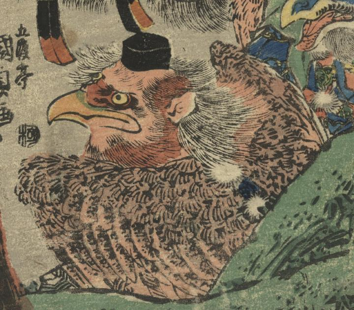

烏天狗。背中に羽がある。頭襟（ときん）を頭にのせ、結袈裟を着けている。くちばしがみえる。
著作者：五渡亭國貞／出典：親書誌：U426_nichibunken_0425：牛若鞍馬兵術励／日付：2015／資源識別子：U426_nichibunken_0425_0001_0002
Copyright (c)2010- International Research Center for Japanese Studies, Kyoto, Japan. All rights reserved.